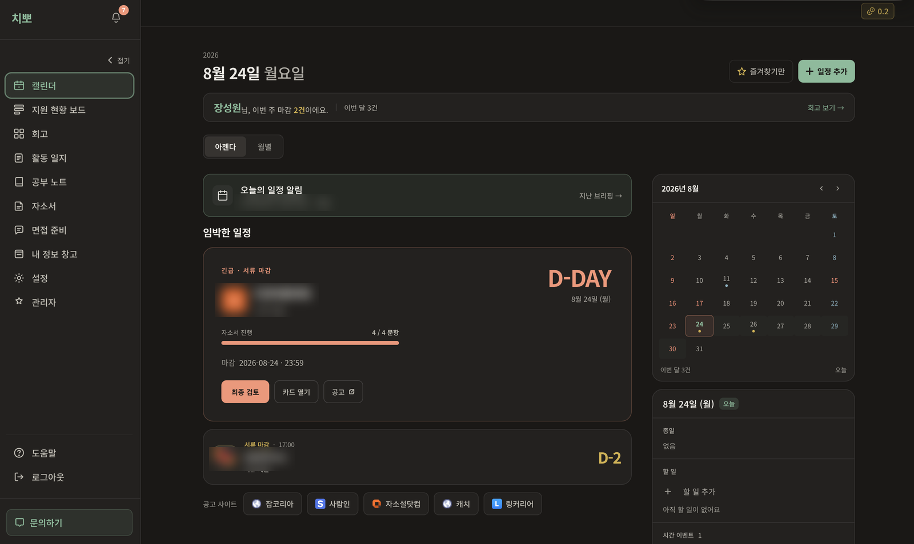

치뽀 — 취업 준비 관리 서비스
- AI 호출 18종을 하나의 계층으로 — 호출별 비용 기록, 제공사 장애 시 대체 전환, 개인정보 3단계 차단
- 배포가 운영 데이터를 건드리지 않게 — 마이그레이션을 CI가 먼저 검증, 162번의 배포(2026.05~09)에서 운영 DB 복구가 필요한 사고 0건
- 장애에 대비한 백업 — 하루 한 번 암호화한 DB 사본을 다른 저장소에 보관하고, 복원 리허설로 절차를 확인
- 웹에서 앱까지 — iOS·Android 앱 출시, 두 스토어 첫 심사 통과
AI 호출 계층 자세히
왜: 외부 LLM을 부르는 순간 비용, 장애, 개인정보 문제가 함께 생깁니다. 기능마다 막으면 빠지는 곳이 생겨, 첫 AI 기능부터 모든 생성 호출이 한 계층을 지나게 했습니다.
무엇을: 호출 전 입력 길이 상한과 동의 확인 · 호출마다 기능·모델·비용 기록 · 서버 오류와 시간 초과에만 다른 제공사로 전환 · 기능별 한도는 관리자 화면에서 배포 없이 조절
개인정보: 입력 칸이 정해진 이름·연락처는 처음부터 제외 → 자유롭게 쓴 글의 전화번호, 주민등록번호 같은 형식 12가지는 공통 계층에서 가림 → AI 응답도 저장 전에 다시 검사

치뽀 첫 화면. 마감이 가까운 지원부터 보여 줍니다. 화면 속 기업명은 개인 기록이라 가렸습니다.